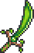
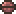

Сеятель
Характеристики
Тип Оружие Меч
Урон 50

Скорость 23 (Быстрая)
Атак/сек 2.6
Крит. шанс 4%
Отбрасывание 6 (Среднее)
Редкость Розовая
Продажа 10

Лучшая модификация Легендарный
Кол-во исследований 1 исследование
Сеятель (Seedler) — оружие, добавленное в версии 1.3. Выпадает при убийстве Плантеры
При атаке выстреливает снарядами , подверженными гравитации, которые взрываются при попадании по врагу или примерно через секунду (с небольшой разницей) после выстрела, разлетаясь на множество самонаводящихся осколков, наносящих урон противникам.